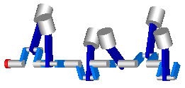

EngineV6V6 engine with 6 cylinders, 6 planar loops and 1 degree-of-freedom |
|
Diagram
{kind=link}
Information
This information is part of the Modelica Standard Library maintained by the Modelica Association.
This is a V6 engine with 6 cylinders. It is hierarchically built up by using instances of one cylinder. For more details on the modeling of one cylinder, see example Engine1b. An animation of the engine is shown in the figure below.

Simulate for 3 s with about 50000 output intervals, and plot the variables engineSpeed_rpm, engineTorque, and filteredEngineTorque. Note, the result file has a size of about 300 Mbyte in this case. The default setting of StopTime = 1.01 s (with the default setting of the tool for the number of output points), in order that (automatic) regression testing does not have to cope with a large result file.
Parameters (1)
| animation |
Value: true Type: Boolean Description: = true, if animation shall be enabled |
|---|
Outputs (3)
| engineSpeed_rpm |
Default Value: Modelica.SIunits.Conversions.to_rpm(load.w) Type: AngularVelocity_rpm (rev/min) Description: Engine speed |
|---|---|
| engineTorque |
Default Value: filter.u Type: Torque (N·m) Description: Torque generated by engine |
| filteredEngineTorque |
Default Value: filter.y Type: Torque (N·m) Description: Filtered torque generated by engine |